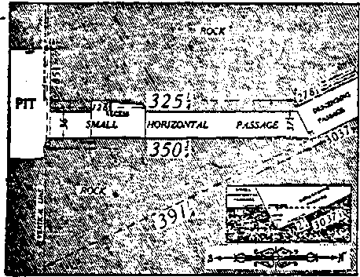
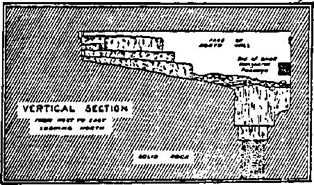
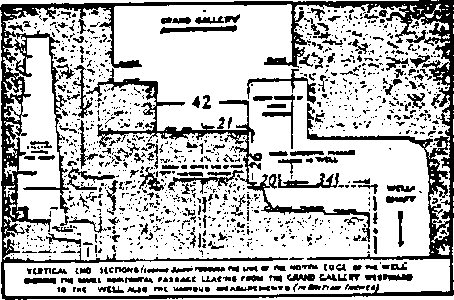
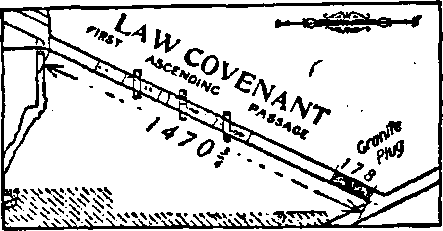
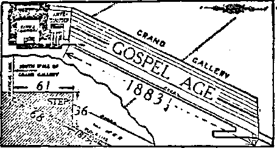

536
606
B:C^
B.cZS '
•=—= —•Sf
TRUTH
r
PROPAGANDA ON THE AIR
A BIBLE FOR THE SCIENTIST
NEW ZEALANDER BEFORE A COURT MARTIAL
OLD ’VORLD DYING
VoL V Bi-Weekly No. 122
May 21, 1924
MAN’S REDEMPTION PROVIDED
5$ a copy — $ 100 a Year
CaBada^andJoreign.Countries $. 1.50
new;
^ZORLD * BEGINNING.-
-r-. —_________________________________________________________________
<Political—Domsno and Foreign A N*W ZgALANDEE SE70SB A COUHT MaBITAI.
**/ Science and Invention
I
J r
*
A , The Scientific Bible . .........
, Great Pyramid Receives Much Attention
' Mathematical Features of the Great Pyramid
1 Precession of the Equinoxes.......'
The Jews Left Egypt in 1615 B. C
\ Christ Returned in 1874 A. D
' Last Jewish Jubilee Due In 1925
Home and Health
Diseased Mile................. . . . . 516
Religion and Philosophy What the Voice Said (Poem)
Man’s Redemption Provided ......
Illustration Showing the Ransom
For Whose Benefit Is the Ransom ?.......... .
pubUsbod every other Wednesday at 18 Concord Street. Brooklyn. N. Y„ U. 3. X, by WOODWORTH. HTOQINGS & MARTIN
Copartner* and Proprietary Addreee; 19 Concord Street, Brooklyn, X Y.t D. S.A. CLAYTON J. WOODWORTH . . . Editor ROBERT J. MARTIN . BuelneM Majoaxer W3L F. HDDGXNG3 . . Sac'y and Trett.
pm Cwrrre a Copy—11.00 a Ybab Maks R>uittamcm to TSE GOLDER AGE qhicm : British.....34 Craven Tarrace, Lancaster Gate, London W. 3
Canadian.........38-40 Irwin Avenue. Toronto, Ontario
Aueiralatian . ......405 Collins Street.eMelbourne, Aaatrall*
South African......6 Lelle Street. Cape Town. South Africa
tt eecond-alaae matter at Brooklyn, N. Y.» under the Act of March 3. 1879
Volume V
ohe Golden Age --------- ---- - - ------------•-------------—---
Brooklyn, N.Y., Wednesday, May 21, 1924 Numbee. 122^
----------------------------:......
A New Zealander Before a Court Martial court, and that the accused must on nd accounv be permitted to base his arguments and defence^
ON MAY 9, 1918, the day Judge Rutherford and his associates were arrested for being Christians in a time of propaganda, Henry Ritchie Urquhart, of Auckland, New Zealand, stood up before a court martial, which subsequently sent him to prison for eleven months at hard labor, and told the court some interesting things. It may even be supposed that he caused some of the court to do a little thinking— surely a hard thing for a court martial.
“Ur. President, it is with regret that I find myself compelled to lodge any objection against you as a member of this court martial. You are somewhat of a stranger to me, and for that reason alone I naturally wish to think, and do think, only kindly of you; yet I have an objection and, to my mind, a serious one. It is of precisely a similar nature to that which I have against the remaining members of this court martial.
“The objection has reference to the nature of the oath you take, as president of this court, and to the consequent impossible position it places you in when you seek to try me by the various clauses of the Army Act. •
“The oath referred to, if taken sincerely, means that you grant to God and to religion the very highest place of honor and reverence. Yet when the Prosecuting Counsel warns the court, as he will do immediately afterwards, that according to Section 12, Chapter 111, of the Manual of Military Law, religious or conscientious scruples can have no weight at all with the court, and afford no justification whatever for refusal to obey a military command, you will calmly acquiesce in his ruling.
“In other words, when, after acknowledging God and the truth*of the New Testament teaching by swearing by His name and on His book in the most solemn manner, the Prosecuting Counsel warns you that from that point on God and His book must be banished from the
BIS
on guidance from the One, or on the teaching of the other, you are prepared to accept the situa-$ tion and try me according to the Anny Actr; alone, an Act which clearly does not recognized the right of a man to be guided by that very God; without acknowledging whom in solemn oath," you dare not try me. ,v-g
“Much is said with respect to the solemnity; of this oath in your own books of military law?
“For instance, in Rule 30 of 'Rules of Procedure’, these words occur: 'The person to b^ sworn will take the'book in his right hand ungloved.’ I wish you, Mr. President, to note that word 'ungloved’. It is fraught with deep meaning. There must be no hypocrisy about the act of taking the oath. As the flesh of the, hand must come in contact with the Bible with*; out anything intervening, so there must be no ; reservations on the part of him who takes an oath—no veil of pretence between him and his; God. It is the most solemn of all oaths, one iir which the man, if he realizes what he is doing, stands face to face with his Creator. .
“Further, we are told in this same section that? 'the words of the oath should be said with-distinctness and solemnity by the person ad-r ministering it’ ,?
“Notice, too, that the book must be the *New; Testament or some book containing it/ I wantJ you to remember, Mr. President, that this New^ Testament that you have sworn so solemnly by ’ on many past occasions is the very book tho-effect of whose teachings on the accused beforei you today is to go for absolutely nothing. - M
“Yet your own books of military law will have no trifling with the solemn oath you, as Presi-. dent, must take and must swear witnesses by. In a note to Rule 30 these words occur: *In the case of a witness it is well, in the interests of. truth, to prevent subterfuges such as omitting
the: words “So help me God," or kissing the thumb instead of the book, as dishonest witnesses fancy that thus they escape the guilt of perjury?
the administration of the oath, a 'man's religion has very definite recognition; for ja farther note to Rule 30 says: "if the above ^ceremonies axe not in accordance with the religion of the person to be sworn, the ceremonies of his religion must be followed, as provided by this rule.' Why is it then that after,an accused man's religion is thus definitely recognized in the administration of the oath, you are prepared to preside over a court which from that point on 1 banishes all thoughts of God's dealings with men from its calculations, and treats a man's religious convictions as if they were mere paltry trifles unworthy of any serious consideration!
“The paragraphs referred to above then go on to treat of the solemn Scotch oath, T swear by Almighty God as I shall answer to God at the Great Day of Judgment.' It tells us further that the Jew is to‘be sworn on the Old Testament, with his head covered; that the Mohammedans and natives of India are to be sworn according to their respective religions. The whole section, indeed, is pregnant with meaning; it impresses on all a deep sense of the solemnity of taking an oath, it accords to God and to His book the highest reverence and honor.
“Before you dare try me, Mr. President, you yourself must take a solemn oath of this nature; and in taking it you admit your belief in God and in His book. You swear by the New Testament because in your Dominion there is no more sacred book to swear by; you look to God for guidance and ask Him to help you in the execution of your duty.
"Then immediately after all this, you agree, ’ ■ that the Prosecuting Counsel is right when he warns the court that according to military law any religious or conscientious scruples urged by an accused, as reason for disobeying a military command, can have no weight and can afford no justification for refused to obey.
“In other words, you are about to try me as if you were a pure official and not a man of God-created independent thought and judgment. , The Army Act, in spite of your solemn oath, is to carry more weight with you than the teaching of the New Testament
“To be consistent, your oath should have been taken on the Army Act and in the name of the New Zealand Government, not on the New Testament and in the name of your Creator.
"It is every man's duty to be a man first of all, an official somewhere after that or not at ally according to the light revealed to him. To do as you have done at all previous courts martial, acknowledge God and the New Testament in solemn oath, then in accordance with military law deny that the guidance of God and the teaching of the New Testament have anything to do with a Christian's refusing to obey a military order, is to act, not as a God-fearing man, but as an official and an official only. Such a man win never command any confidence. With much regret therefore, Mr. President, I must object to your acting as president of this court martial
“Only on a promise from you and from the remaining members of the court, that you would all sooner resign your positions than force a man whom you believe to be a thoroughly sincere follower of Christ to do that which he feels to be wrong and sinful, would I willingly submit to be tried by this court"
AT SENECA FALLS, New York, March 13, . one hundred and twenty-seven children and five teachers in the public schools drank milk which came from a local bottling plant. Within stwo. hours seventy-eight children and four teachers were taken severely sick with pains ’in the stomach, nausea, drowsiness, vomiting, ;and diarrhoea. Many had to be carried home. /Only twenty-nine of those who drank the milk showed no signs of illness.
Investigation showed that one cow on the morning m question had a sore udder. This the owner had noticed, but had not thought it 08 sufficient importance to discard the milk. The cow was examined; and^her temperature was found to be 104 and the milk of a peculiar color. Laboratory tests showed that .the milk contained large quantities of pus and germs capable of causing the type ofillness with which the children were stricken.
QUITE a problem has developed with radio stations which have been constructed for commercial purposes. It costs a considerable amount of money to erect a good broadcasting station; and the upkeep and maintenance are more or less expensive propositions, according to the management. One station charges $100 for ten minutes’ rental of the air; and«one hour's r rental costs about $400.
It is estimated that there are 700,000 radio* receiving sets within a 100-mile radius of New York city, and that there are four listeners for each set; therefore it is possible for nearly 3,000,000 to “listen in” at one time. Making allowance for those not listening in simultaneously, and for those who would be tuned in with
some outside station, the potential audience is conservatively estimated at one-half of the number of receiving sets, or 350,000.
It is claimed that nearly 300 concerns paid for broadcasting from WEAF in 1923. But these advertisers cannot speak as they choose; for direct advertising is not permitted, neither are direct, personal messages permissible. The prospective radio advertiser is frequently much put out when he finds that he cannot declare the superior quality of his wares to radio fandom.
In fact, the advertiser cannot advertise his business at alb He must conform to what is
called the “technique of institutional advertising,” which means that the announcer may introduce him as the manager or president of such and such company, and say at the close of his talk, that you have just’ listened to Mr. So-. and-So, president, manager, or whatnot, of such and such company. If the advertiser wishes to do so, he may hire an orchestra to broadcast a thirty-minute concert; and, of course, the announcer tells who the philanthropist is and what company he is connected with.
That the advertisers are studying the technique of technical advertising is dawning on radio bugdom, and those “bugs” are critical, and are not going to have it “put over them.’* It is said that Patrick D. Fox, of the Borden's I?arm Products Company, recently talked from WEAF on the problems of the milk distributor. lie made no mention of the Borden company, although his connection with the concern was made plain at the beginning and at the end of his talk. At least one radio listener construed his talk as a subtle propaganda, inasmuch as talk on the difficulties of milk distribution mights^ tend to justify a high price or an increase in the.$£ price of milk
However, the officials of the broadcasting^-station make justification of such talks on the^i grounds that the radio public is interested in the way big business is carried on, considering that it is instructive. A very clever bit of advertising was broadcast by an actress. She gave a description of the way she “made up” for her work on the stage, presumably going into detail* At the end of her talk it was announced that she would be glad to send a booklet on her talk and an autograph picture to those who wrote her, .in care of the broadcasting station.
Four thousand requests were received, and no doubt the broadcasting was paid for by the manufacturers- of the cosmetics she professed to use. If any criticisms were made concerning this talk by the actress, they were not reported.
Of course, there is a vast difference in the viewpoint of the suffering public. If we must listen to the difficulties ;the milk companies have in keeping the milk pure of disease germs, rich in butter-fat to meet the law's requirements, of making deliveries with such promptness that the milk will not sour, of keeping the cows healthy and the stables clean, and of the chances the milk companies must take with the milk that comes from where they do not know, in order that the thousands of babies may get good food and keep well and grow to maturity, then some of us must complain and show our ugly dispositions.
But when an actress tells how she beautifies herself with lip sticks, paints rose-colored cheeks, pencils black eyebrows, and offers to send her picture, taken in the “make-up,” that is different; for it affords us the pleasure of seeing our daughters learning the secrets of dolling up for the stage, in order that they may parade the streets and otherwise make themselves look foolish!
The radio people are approaching the legislative phase of the business with caution. It has been suggested that when any speech or program has been paid for the announcer should so state at both the beginning and the end of such performance. This is a good idea. Then-those who are hypercritical or object to adver-
r* . - ■ ■ '
■ - .* '" *
/ ■’ ■ ■■ '
-n* GOLDEN AGE
rising will Have the opportunity of tuning in with some other station. We would fault no one who refuses to listen to advertising.
Advertising has developed into a science. Much street-car and billboard advertising is iXalse, and magazine and newspaper advertising Sis > very little better. Exaggeration, magical phrases, and subtle suggestions are the rule. Z ‘After reading Roger Babson's statistics on advertising, how the uptrend of business volume follows the use of increased newspaper space, ;we are convinced that if all advertising were 'done on strictly truthful lines, eliminating the magic and cunning, there would be a horrible slump in the business activities of the world.
And, perhaps, the awakening of radio fans to the humbilggery and overdoneness in advertising is the beginning of saner methods of making known the virtues of merchandise. Or, maybe— still better—the time shall soon come when merchandise and commodities of every sort will advertise themselves. Then shoddy, imperfect, and not best-made goods will disappear forever.
Many are the instances where speakers have tried to broadcast messages to their families or friends who, they had reason to believe, were
Biooun, X
listening in. But watchful men were on the job, who threw the switch; the speech was pocketed; and there was a hole in the lecture. If there is a suspicion that a code message is being broadcast the switch is turned—it is so easily done; and the speaker imagines he has "put one over? the station, until—he finds out differently.
It is becoming the custom for stations to require of prospective speakers advance copy of the talk for approval before broadcasting. If any part has been deleted, and if the speaker undertakes to refer to it, he is taken off the air. Speakers of national prominence, talking at a dinner, are also watched for anything which might be considered inflammatorily partisan in poEtics or in rehgion, or other controversial subjects, in order that their speeches might be "faded away” by turning the switch.
The radio broadcasting stations are under governmental control and supervision. This is as it should be; and we beEeve that the present arrangement and the improvements being made are preparatory steps fully in harmony with the advancing stages of the incoming Messianic kingdom, of which the radio is a most wonderful foregleam and indicator.
What the Voice Said Bv J. o. Whittier
Maddened by earth’s wrong and evil, “Lonl 1” I cried in sudden ire, "From the right hand clothed with thunder, - Shake the bolted fire! '
“Love Is lost, and faith is dying;
. With the brute the man Is sold;
- And the dropping blood of labor Hardens into gold.
. “Here the dying wall of famine, - _ There the battle’s groan of pnin;
And, in silence, smooth-face Mammon Reaping men like grain.
’ • ‘Where Is God, that we should fear Him?’
; Thus the earth-born Titans say ;
-r. ’God, if thou art living, hear us!’ . . Thus the weak ones pray.”
“Thou the patient Heaven upbraiding,” Spake a solemn voice within;
“Weary of our Lord’s forbearance, ” - . Art thou free from sin?
. “Fearless brow to Him uplifting, < Const thou for His thunders call, •a/‘‘ Knowing that to guilt’s attraction '. Evermore they fall?
<“Know’st thou not all germs of evil
‘ 7 ;•_ . thy heart await their time?
\Not thyself, but God’s restraining, ; Stays' their growth of crime.
“Couldst thou boast, O child of weakness I O’er the sons of wrong and strife, .
Were their strong temptations planted In thy path of life?
“Thon hast seen two streamlets gushing From one fountain dear and free, But by widely varying channels Searching for the sea.
“GHdeth one through greenest valleys, Kissing them with lips still sweet;
One, mad roaring down the mountains, Stagnates at their feet
“For thyself, while wrong and sorrow Make to thee their strong appeal. Coward wert thou not to utter
What the heart must feel.
“Earnest words must needs be spoken When the warm heart bleeds or burns With Its scorn of wrong, or pity
For the wronged by turns.” .
t Cease not, Voice of holy speaking. Teacher sent of God, be near, Whisp’ring through the day’s cool silence, Let my spirit hear!
So, when thoughts of evil-doers * Waken scorn or hatred move,
Shall a mournful fellow-feeling Temper all with iove.
1
^TN THE mouth of two or three witnesses
A shall-every word be established/' wrote the apostle Paul to the Corinthian church.— 2 Corinthians 13: L
. Many at present are disposed to reject the Bible, claiming that there are no evidences that it is of divine origin. They have convinced themselves and some others that it is merely a collection of old fables and traditions, compiled ■ in the early dawn of intelligence; and that * therefore it has nothing to attract or interest the so-called advanced wisdom of our day.
Recent archeological discoveries have thrown much light upon heretofore obscure passages and stimulated renewed study in the historical portions of the Bible. Modern scientific inventions and mechanical devices are demonstrating the truth of the visions of the prophets of old. The automobiles and steam trains are easily recognized as the “chariots [which] shall rage in the streets, . . . shall justle one against an> other in the broad ways, . . . shall seem like , torches, . . . shall run like the lightnings, . . . in the day of his preparation/’ which the prophet Nahum (2:4,3) saw in vision.
The physical facts of the radio demonstrations are as miracles before our eyes. If man can so utilize the powers of nature that he can hear the heart-beat of another 1,200 miles away, should it seem an incredulous thing that God, who ordered all these laws of nature, could hear the prayer of His children, even though presented in the secret of the closet! (Matthew ’ 6:6) The big fish caught off the east coast of Florida in 1917, with a blackfish weighing 1,500 pounds, another fish weighing 400 pounds, and about 500 pounds of coral in its stomach, proves that the experience recorded of Jonah is not ■ impossible.—Matthew 12: 40.
; It will be interesting news to many to learn that the Bible with which we are so familiar, is in reality the second witness that gives ample evidence of being inspired by divine wisdom, and that Jehovah is now bringing forth another witness to His divine foreknowledge and His interest in the affairs of men. When Moses led the children of Israel from Egypt, he was but pantomiming one of the features of a plan which God had decided upon, the specifications of which had been drawn, sealed and filed away more than five hundred years previous. Moses
. us
himself declared that he but silhouetted a greater one to follow him.—Deuteronomy 18:15. - /
All the prophets of the Bible declared that > they were delivering messages sent by Jehovah, * /• whom they represented; and that their descrip- V tions of the Golden Age to come were by divine -authority. So unreasonable and impossible did some of their prophecies appear at the time . 1 that the people often doubted and criticised, and sometimes killed the prophets.—Hebrews ’//£. 11:36-39. ' -
Apparently insignificant details were sometimes mentioned, as when Micah (5:2) named • 7 < Bethlehem as the birthplace of the expected Messiah. It is now known that the Prophet merely made public mention of the spot that had been selected over 1,200 years before his . day, before there was a hamlet on the spot, and -
recorded in “Bible Number One," the one writ- -
ten for the scientist.
When St. Paul wrote: “Death reigned from \-Adam to Moses," the latter date referred to the -opportunity of salvation offered to the Jews at ’' Mt. Sinai, by which they might have secured everlasting life, if they could have kept God’s. law. (Luke 10:28) St Paul admits that no imperfect Jew was able to keep that law; and ■ that if he or any one else, Jew or Gentile, were to obtain salvation, it must come some other ‘ way. (Romans 8:3) All this has been found written in the specifications of the Scientific -Bible. Even the date that Moses was to lead ’ the Jews from Egypt was indicated over four '/* hundred years before Moses was born. Many prominent dates in history are indicated, even . : down to the World War of 1914. The year 1925 *
is also a specified date. \
St. Peter was arrested and imprisoned for preaching Jesus and Him crucified. In his de- < fense he said to the Sanhedrin: “There is none ■ other name under heaven given among men, ; whereby we must be saved " (Acts 4:12) Jeho- -vah had spoken forth the edict, and already had ■it on record for over 2,000 years.
Both the Bible for the people and the Bible for the scientist mention that God has two offers ' of salvation: One limited to Christ and “holy brethren, partakers of the heavenly calling," such as might choose to follow Him by the way of ignominy and the cross to heavenly glory, , honor and immortality—the divine nature; the „
other offer to be extended later to “whosoever will” of all the families of earth, to an earthly Paradise, perfection of human nature, and everlasting life on earth. “Blessed are the ^xneek; for they shall inherit the earth?' ^rThe failure to distinguish between these two •r offers is one of the chief causes of confusion in
the minds of many students of the Bible. Both ; Bibles show clearly that the evil and distress in
the world are not of God, but were permitted for ^a time that man might demonstrate his inability to save himself or his neighbor. While waiting for man to learn his lessons, God has been quietly carrying on a work of His own.
The Written Bible is in language common to y man, and in its present book form is so compact that one can carry it in his hand. The Scientific
Bible is over thirteen acres in size, and has been estimated to weigh over 6,000,000 tons. It is in the language of the scientist, without a hieroglyph or the scratch of a pen. In addition to outlining the same divine plan for the salvation of man that the Written Bible does, it has mines of scientific knowledge, the treasures of which seem to be inexhaustible. Scientists are eagerly assaying some of the ore already taken out.
Any person-of ordinary ability can write a record of past events, if he has correct data from which to compile it. That is history. But to write that same account several thousand years in advance is quite another thing. That is prophecy. This God has done in both His Bibles. Many of the prophecies have now become history. Many historians have not been believers in the Bible. Some have never heard of it; yet their histories are witnesses to the truth of its predictions. The accuracy with which those already due have been fulfilled is good evidence that all the unfulfilled ones will be as accurately fulfilled when due.
The physical fact that these prophecies have been so accurately fulfilled demonstrates clearly that Jehovah is carrying out His plan definitely decided upon ages ago. He has not interfered with any one's freedom of will, though He has often restrained the freedom of action of some. His schedule is on time and not interfered with.
WHAT evidences are there that the Bible is of divine origin? Let us note a few. It is a compilation from thirty or more writers during a period of approximately 1,700 years— from Moses to John the Revelator. These writers were from various walks of life; fishermen,, physicians, herdsmen, lawyers, scribes, priests, princes, counselors, and kings. Pervading all their writings is one principal theme. No book; has exerted such an uplifting influence upon: individuals or nations. It appeals to the heart-and mind of man, and presents to him a God of love, justice, wisdom and power, who will punish iniquity and reward righteousness.
No book has been so loved by its friends or hated by its enemies. At times the Bible has been outlawed; and any one found in possession of one, or even a part of one, has been sent to prison or the stake. Shortly after the death of the apostles a great persecution arose against Christians and the Bible. Whole nations went under a dense cloud of prejudice and cruelty,/ and dropped into ignorance and superstition’.’ from which they have not yet fully recovered-. Some of the persecutors acted like demons* . That period was well named the "dark agesA The Written Bible does not pretend to be a treatise upon the sciences. It is a statement of .< God's plan, of His law1; it is a treatise upon, righteousness and morals, and an appeal tp the -better nature of man. It records God's dealings* with the children of Israel, with whom He had’ made a covenant, and of whom He made many:: types. It records their failures without color-? ing, and without excuses shows up many individuals in their true light.
Pictures of future kingdoms and men were thrown upon the prophetic screen. Babylon,-Medo-Persia, Greece, and Rome were shown as ■ four great world powers, to be followed by the^ kingdom of God. To Nebuchadnezzar these mighty kingdoms appeared as a great man, wonderful to behold, and the fifth kingdom as a calamity which knocked his big man all to pieces. To Daniel the same four powers appeared as four vicious beasts, devouring each other in succession, and the kingdom of God aa4 a great,deliverer. History shows that Daniel had the proper view. The four kingdoms are past, and the fifth is now coming upon the scene. —Daniel, Chapters 2, 7, 8.
Not only were nations pictured, but individ-' uals were often silhouetted so distinctly that-they are quickly recognized by the student of history. Alexander the Great is easily identified, in Daniel 8:21,22, and 11:3,4. Even the division of his empire into its four parts is delineated-
* 1UT 21, 1924
After the division of the Grecian empire, ; prophecy speaks of Egypt as the "king of the south," and of Rome or some of its parts as /flung of the north?’ Daniel 11:17-19 outlines /incidents which occurred during the time of •'Mark Antony and Queen Cleopatra. Augustus " Gesar is pictured in verse 20 as "ft raiser of I taxes”; and Luke (2:1) thus describes him. ■Verse 21 tells that Tiberius Ciesar, "a vile per> '"son shall . . . obtain the kingdom by flatteries.” *Verse 25 outlines the second war between Rome ’and Egypt, at the time of Aurelian and Queen r.Zenobia.
• Daniel 11:29 to 45 refer to Napoleon and his ^career. Verse 29 reads: "At the time appointed ■’he [Napoleon, of France as part of the kingdom "of the north] shall return, and come toward the . south [Egypt]: but it shall not be as the former [war under Mark Antony], nor as the latter [under Aurelian]. For the ships of Chittim [England] shall come against him; therefore he shall be grieved.”
. Admiral Nelson defeated the French squadron in Aboukir Bay, August, 1798, "at the time appointed”; and this defeat so grieved Napoleon that he shortly afterward returned to
France, as foretold. No historian has better delineated Napoleon than did Daniel in verses 3645. How could Daniel have foreknown all ■ these particulars, 2,300 years before Napoleon was born, unless inspired by divine wisdom! In the Bible the exact dates of the birth and death of Jesus were foretold, as was also the ; great war in 1914.
:• The Written Bible gives the clearest, tersest description of the creation of the earth yet .written. Professor J. D. Dana, a writer of much prestige on geology and natural history, says of the Mosaic account of creation:
aThe first thought that strikes the scientific reader is the evidence of divinity, not merely in the first verse of . the record and its successive fiats, but in the whole order of creation. There is so much that the most recent findings of science have for the first time explained, that the idea of man as its author becomes utterly iDcomprehehsible. By proving the record true, science 'proves it divine; for who could have correctly narrated the.secrets of eternity but God himself?” “The grand old Book of God still stands; and this old earth, the more Its leaves are turned and pondered,, the more will it sustain and illustrate the sacred Word.”
. It is not at all unreasonable to expect that the original manuscripts of both Old and New Testaments will be discovered, sooner or later, hid-:< den away by Jehovah until the proper time.1/ Some have criticized the Bible because, as they J say, if it came from Jehovah it should contain treatises on all the sciences as well as on theology. Why not make the same criticism against ■ any versatile writer who does not tell all he knows in one book!
The physical facts of the universe and the multitudinous and intricate 'flaws of nature” prove that their Creator and Controller is far ■' superior to any being man can imagine. This ' little planet that we live on is a wonderland all by itself, and a testimony of the wisdom and care of its Creator and of His care for His creatures. Were it not for "man's inhumanity to man” it could easily be transformed into a Paradise, with- as perfect happiness as there is in heaven. God has provided everything necessary to gratify every proper sense of both body and mind.
The giants air, water, electricity, and others yet to be trained, stand waiting to do man's bidding at a moment’s notice. These servants can do more, better and greater work than human servants. They are ready to do the most
menial service; they wash our clothes, sweep ‘ our houses, cook our meals, light and heat our-homes, carry us over the highways with almost . the speed of the swallow’s flight, carry our messages to the uttermost parts of the .earth on the . wings of the morning, deliver the speech of any -
lecturer or the music of the best opera in our ■
own homes, as perfectly as though we sat in the > same hall with the singers, even though they are actually thousands of miles away.
All these servants need is a master. Man has . the ability to be their master. He was created to be a king, not a slave; and a full retinue of most faithful servants has been provided. God . created man and gave him the earth for his dominion. Man is just waking up to this fact. ; He is still rubbing his blinking eyes, as if arous- ' ing from a Rip Van Winkle sleep of several thousand years. It is hard for him to comprehend what he actually sees going on all around him. God’s Word is the key to the mystery.
Both Bibles teach emphatically that man was created perfect and in Lhe favor of God; that shortly after his creation he fell from that favor, and entered the way to sin, which leads to > death. Both Bibles tdach that man has been unable to save himself; and physical facts prove
that this is true. Man needs assistance.. Both Bibles teach that such assistance has been provided; and that “whosoever will" may recover . all that was lost, a wiser and better man, with J a fuller appreciation of his Creator. The Son of Man “came to seek and save that which was z^lost"; and every prophet of God has spoken of j the “times of restitution,” the giving back of < that which was once possessed, lost, and later . found by another. This kingdom of God is the
principal theme of both Bibles.
THE Scientific Bible might with propriety be called Bible Number One, since it is the older by several hundred years. It is the Great Pyramid of Gizeh, in Egypt. It speaks by its geographical location, its size and shape, its interior passages, their planes of incline and their lengths, its chambers and their sizes, locations and relationship to each other; the granite " trimmings in the King’s Chamber, and the limestone trimmings of the Queen's Chamber, the peculiar entrances to each, and inlaid stones in various places, so located as to indicate events and dates. No book-binder ever did a neater ' piece of work. All expert investigators testify that the Great Pyramid is a masterpiece of workmanship, and that it could not be duplicated today, with all our modern science and mechanical equipments.
It is customary for authors to date their publications. The Great Pyramid is no exception. We find the date of "copyright,” if you please, given twice: Once in the language of the astronomer; the other by the builder, in the building itself, and referring to the astronomer. Although constructed by man, it is all too evident that no man could have been its architect; for no man could at that time have known what is therein written, unless by divine inspiration. We herewith present some of the evidences and . ask every honest student to test them carefully, simply upon the facts submitted, and with any additional data he may secure.
-■ The Pyramid of Gizeh
rpHE Pyramid of Gizeh is located upon a rocky J- plateau on the west side of the river Nile, about eight miles from Cairo, Egypt, and about one hundred and ten miles from the sea. The
/ ancient historians, Herodotus and Strabo, described it as covered with polished marble and glistening in the sunlight like a mountain b£j glass. Tradition had it filled with untold wealth^ hidden away by ancient kings. There was'41 secret entrance away up the northern face, lra& it was so closely fitted that it could noting located from the ground. The ancients placed*! the Great Pyramid at the head of their list,o^ the Seven Wonders of the World.
In its primitive quiet and beauty it remained;* for over 2,900 years, as mute as the Sphinx, and? apparently as useless. About 820 A. D. A^ Mamoun, an Arabian Caliph, determined to$ possess himself of its hidden treasures. secured a large force of workmen, promising divide with them the wealth they should. findJJ He was not able to locate the secret door, so he| forced an entrance by tearing a large ugly hole# in its beautiful surface, as near as he couldr estimate the location of the door. Through soli<K : masonry of massive stones, securely cemented^ together, he quarried his way tediously about^ 100 feet, where he reached one of the* inner} ( passages. Eagerly his men sought the buried^ treasure. ■
It was a treasure-house indeed, but its mine&j contained none of the gold or gems he was$ looking for. Neither Al Mamoun nor his work-* men had any use for such as they found. They^ were like the ignorant soldier who was ran»; sacking the palace of a defeated king; The king; in his precipitate flight had dropped his bagj containing the royal jewels of great value. The/ soldier found it and picked it up. He opened the^ bag and saw the precious stones. He wondered* what a king would want of such worthless*- / pebbles. He threw them away and, showing his? empty bag to a comrade, said: "See what a fine? dinner-bag I have found.” Not only was AE Mamoun disappointed, but to appease the dis-: appointment and anger of his workmen he hadr to hide a quantity of gold therein and let them* find it
Later the beautiful casing-stones were re< moved, with the object of building mosques and* cities, until nearly all of them were stripped^ from their long resting-place and taken to adorns palaces and public buildings. Like ghouls rob^ bing the wounded, the vandals continued thei^ desecration, until today the Pyramid stands as; a mighty giant, denuded, wrinkled and prematurely old, yet in its strength defying enemies and the elements, still guarding the precious
(treasures entrusted to its care until they shall fbe delivered as directed.
^Idke a royal messenger with strict orders to ^dxver his message only to certain ones and specified time, so this messenger from ^Jehovah hM orders to deliver his treasures to ►fht^njobles of the mind,” scientists, at a specified ram© as a witness to them. That time is here, ^id this messenger is delivering these hidden Measures before their astonished gaze. Like the fpentions of this “Age of Miracles,” the supply Appears inexhaustible. We now smile at the (suggestion reported to have been made by the ^Superintendent of the Patent Office at Washington in 1844, that Congress might as well close rfhe.Patent Office, for all that could be invented pad been patented. Many in the past have been meSned to smile at the folly of any one who prauld build such a mighty structure as the ^Pyramid when it could be put to no use.
I^Itwas not until the nineteenth century that it «. ^gradually ^dawned upon some scholars that the ^Great Pyramid might contain some scientific
jieeonipanied Napoleon on his Egyptian expedi-Jfcn, made a few surveys and examinations. |Xhey dug into some of the piles of debris at gfoe base, formed by the chips when the casing-jdones were tom from their cemented positions ^■nd slid or tumbled down from above, and by ynad blown in from the desert They found [mat they termed “encasetrements” at two of S’ .earners, large square stones sunk into the gnEd rock bed on which the Pyramid was built. i< 1837 Colonel Howard Vyse employed
hundred workmen to assist him. H© M> dug through the mass of debris, in some fifty feet deep, with the desire to locate ipossible ■ th© original base lines. Besides the foundation, he was fortunate in three of the original casing-stones still !K;position. Though varying in thickness they Jwitte all four feet, eleven inches high and had Etbe same outer face bevel. One of the three is
'jAnes were joined together so closely that it psw^difficult to determine the point of joining. £Ebecement is only about one-fiL'ticth of an inch yet holds the. stones together so tightly ’Saftitis difficult to pry them apart. Considering Shtlargesurfaces thus evenly faced, the workmen t have been experts, superior to any of today.
These casing-stones gave Colonel Vyse therein© to the original exterior dimensions and. top the incline of the sides. He also found the two< “corner-stones” mentioned by the French saxp ants. He believed that they were sunk into the rock foundation to indicate particular- points’ for measurements. This was verified by later ■ discoveries. Curious fine-drawn lines were also ; found upon them, which were later connected with others within the structure. No such : “corner-stones'’ are found in any of the other pyramids. These "socket-stones” are evidently-referred to in Job 38:4-7: "Whereupon are the ? sockets [margin] thereof made to sinkf or whd< laid the cornerstone thereof!”
COLONEL VYSE published three large volumes entitled “Operations at th© Pyramids of Gizeh.” These works aroused deep interest, and others began to investigate. In 1859 John -Taylor published a work, "The Great Pyramid; why was it built! and who built it!” He was the first to suggest that possibly the Pyramid was of divine origin. Before his death ho interested Professor C. Piazzi Smyth, at that time Boyal Astronomer for Scotland.
In 1864-1865 Professor Smyth spent several months at the pyramids. He made extensive measurements and astronomical calculations; these he published in three volumes entitled, “Life and Work at the Great Pyramid ” He also published "Our Inheritance in the-Great Pyramid.” Later he made other visits to secure { additional measurements and to verify some previous ones, and in a few points he revised his astronomical calculations slightly.
William Petrie, father of Professor Flinders — Petrie, first suggested that the “top-stone”, itself a small pyramid, to the form and angles of which the whole structure conformed, might in some sense symbolize Christ. In Job 38:4-7 is mentioned the “cornerstone”; and Christ said (Matthew 21:42) to the Pharisees: 'Did ye never read in the scriptures, The stone which ? the builders rejected, the same is become the head of the corner!” evidently referring to Psalm 118:22 and Isaiah 28:16. It is easy to see how this would be particularly true of the top-stoneof the Pyramid. It would not fit anyplace during the process of building; but when the . apex was reached, no other stone would fit.
- About 1881 Professor Flinders Petrie, who had made personal visits to the pyramids and extensive measurements of their upper portions, wrote his memorable work, “The Pyramids and . Temples of GizeL” He was also enthusiastic in describing the wonderful workmanship of construction, closeness of joints, accuracy of angles, : and exactness of detail evidenced throughout
the entire structure.
The above books are now rare, but are to be . found in some libraries.
In 1893 Mr. C. T. Russell published his work, “Thy Kingdom Come.” Having read Professor Smyth's work, “Our Inheritance in the Great Pyramid,” he was so impressed with it that he ■ devoted one entire-chapter to the theological * teachings of the Great Pyramid. A friend hearing of his intention requested the privilege , of submitting the manuscript for the chapter on the Great Pyramid to Professor Smyth for . criticism. In returning the manuscript Professor Smyth wrote, expressing much interest. We quote part of his letter:
"As I progressed through the pages, the powers, the specialties and the originalities of the Author came out magnificently; and there were not a few passages I should have been glad to take a copy of for quotation, with name, in the next possible edition of my own Pyramid book. ... I merely remark here that he is both good and new in much that he says on the chronology of various parts of the Pyramid, especially the First Ascending Passage and its granite plug; on the Grand Gallery, as illustrating the Lord's life; on the parallelisms between the King's Chamber and its granite against the Tabernacle aud its gold; and generally on the confirmation or close agreements be ween Scripture and the Great Pyramid.”
" The volume, “Thy Kingdom Come,” awakened tlie interest of John Edgar, M. A., B. Sc., M. B., C. M., and his brother Morton Edgar, of Glasgow, Scotland. They determined to test the theory personally. Providing themselves with the best scientific instruments obtainable, long steel tapelines scientifically tested, and the latest cameras for taking flash-light pictures, they visited the Pyramids in 1909, spending several months there. They checked the records given by Colonel Vyse and Professors Smyth and Petrie. In addition they had the lower . passages carefully cleared, at considerable personal expense, and took many measurements
•. of all the passages, chambers, angles and
DtOOKLXSeXr
comers, sometimes going over the ground times to check possible errors. They tookflasb| light pictures of all parts of the interior,,aniS : many photographs of the exterior and-sum roundings. : ;
Later visits were made by Mr.Morton Edganatf 1912 and 1914, to examine certain features mbim >
. carefully. They published “Pyramid Passage^ , in three volumes: the first containing numerous photographs, drawings and diagrams, and shovel ;
ing the symbolisms of the Great Pyramid; thej ! second dealing more particularly with thq f chronological features; the third taking up the j scientific teachings. These are the most hicu£ : and varied treatises yet published oh the Grea£ J Pyramid. It is by the courtesy of Mr. Mortcnq Edgar that we are privileged to present thw : drawings herewith. ■ i
Date of Pyramid Erection
Professor Smyth was the first to suggest tha£ possibly the builder bad hidden in the geo3 graphical location of the Pyramid and thepeeo^ liar incline of the interior passages the secret ofi the date of its erection. His first calculations^ 2170 B. C., but later it was revised, and has been definitely proved to be 2140 B. C.
The date 2140 B. C. was 4,064 years ago, onfap 332 years after the flood, 18 years before Node died, 170 years before his son Shem died, andl 20 years before Abraham was born. By soQMj Shem is considered the Melchizedek of Salesi3 later Jeru-Salem, who met and blessed Aho* ham as he was returning from the slaughter,® the kings who had formed the first League^ Nations and captured Lot and his family^M recorded in Genesis 14. It has also been sqg gested that Shein was the builder of the Gret| Pyramid, and the suggestion is not withon some foundation. -
At 332 years after the flood the boundari^ of the inhabited portion of the earth couldiM0 have extended far beyond Mesopotamia east, the shores of the Caspian, Blade, . Mediterranean seas on the north/and Egypt on the south. Means of travel wob limited, and people were not crowding other. How much was then known of the shape and land formation of the earth, audit geographical divisions J What was known of Sm distance of the sun from the earth, or7Wi precession of the equinoxes, or the polar aji
equatorial 'diameters of the earth? Let us keep these questions in mind as we read the Great Pyramid.
First we will notice the location selected on which to build this “Bible in Stone,” as Dr. Seiss named it. The accompanying drawing will assist the eye. «
In 1868 Mr. Henry Mitchell, Chief Hydrographer of the United States Coast Survey, was
sent to report the progress of the Suez Canal. While in that vicinity he made a survey of the coast of Egypt, and was struck with the circular form of the coast line at the delta of the Nile. He made careful examination and found almost . a perfect quadrant, the sides being formed by the hills which bordered the lowlands and met near Cairo. By closer calculation he found the apex of the angle to be at the site of the Great ^Pyramid, about eight miles west of Cairo. This *■ gigantic structure stood upon the edge of a
rocky cliff, or plateau, and overlooked theehtift| Lower Egypt He was so impressed, that<ii| remarked: “That monument stands.in'a mbre^ important physical situation than any otheil building erected by man.” It might well be saidA to be in the center and at the same time at-the^ border of Egypt Twenty-five hundred years| -ago the prophet Isaiah wrote: "In that day shall--there be an altar in the midst of the land
Egypt, and a pillar at the border thereof to Jehovah. And it shall be for a sign and for a *. witness unto Jehovah of host in the land of Egypt.”—Isaiah 19:19.
Professor Smyth observed that a longitudinal line drawn through the Great Pyramid would cross more land surface than any other line; -whereas its antipode would touch very little land, except on the western portion of Alaska. . He therefore claimed' that its location was by far the most suitable for the zero of longitude^ ?
a* it would better suit all nations. He further stated that a latitudinal line at the same point would cross more land surface than any other . known point How did Shem know of such an important location 1
ONE of the first scientific features discovered in the Great Pyramid was that its height was to the length of two sides at the base line as l is to 3.14159; or, stated otherwise, twice the height considered as a diameter of a circle is to the entire base line as the diameter of a circle is to its circumference. Thus the problem of •- squaring the circle had been actually worked out and recorded 4,000 years ago.
About the beginning of the sixteenth century Rudolph Von Ceulen discovered the ratio of the diameter of a circle to its circumference to be ; 1 to 3.14159. So great did he consider his
. ‘ discovery that he had it recorded on his tombstone in St. Peter's Church, at Leyden. But he was a little over 3,800 years behind time.
For a long time mathematicians had tried to find some standard of measures which could be . adopted by all nations. Believing it should in some way be connected with the earth, they finally took the distance of the earth's quadrant, from pole to equator, and divided it by 10,000,000. The result, 39.37 inches, was suggested as the basis for a national cubit. This was adopted by the French in 1799, and later by other ’ nations, including the United States. This is known as the Metric System, linear measure.
After critical and exhaustive calculations, based upon comparison of many measurements and cross-measurements, Professor Smyth discovered that the Great Pyramid had a standard of both linear and cubic measure peculiar to itself. The linear standard he found to be a cubit of twenty-five inches, which he called the Pyramid cubit. Other divisions or lengths he - . named similarly, as the Pyramid inch, the Pyramid mile, etc. The Pyramid inch is one-thou-aandth part longer than the standard British inch; in other words, 1,000 British inches make 999 Pyramid inches. Applying this standard he .was amazed at the mine of information it opened.
The polar diameter of the earth had been found to be 7,899.3 British miles, or 500,500,500 . British inches. Without entering into the details here, it may be said that the Great Pyra
mid gives the polar axis of the earth as 500,- .
000,000 Pyramid inches—almost exactly equaling the 500,500,500 British inches. Dividing this by 2, to get the polar radius, we have 250,000,000 Pyramid inches, as the basis. Dividing this by 10,000,000 we have 25 Pyramid inches, or a. Pyramid cubit. This is a better standard than the one based upon the quadrant. The Pyramid cubit figures largely in the mathematical and astronomical features of the Great Pyramid
Number of Days in the Solar Year -
THE exact length of the solar year is 365 days, 5 hours, 48 minutes, and 46 seconds; ( stated decimally, 365.242 days. Three hundred and sixty-five days are usually counted as a year, but this runs the time ahead by nearly a quarter of a day each year; and in order to hold it in place an extra day is added every fourth year, called a leap-year. But this in turn is a bit too much, as it is not quite a quarter of a day over each year. To hold it back, only such century years as are divisible by 400 are counted as leap-years. Many will recall that the year 1900 was not a leap-year. It was divisible by 4 but not by 400.
The length of each side of the Great Pyramid at the base line is 761 feet, 8 inches, or 9,140 . British inches. Reduced to Pyramid inches (Deduct one inch for each 1,000) is 9,13L Divide this by 25 to reduce to Pyramid cubits, and the result is 365.24. The four sides, measured in cubits, equal the number of days in four years, including the extra day for the leap-year.
ASTRONOMERS have estimated the dis-■ tance of the earth from the sun at between 91,000,000 and 93,000,000 miles. Permit us here to quote from “Pyramid Passages,* VoL I, page 22: .
“William Petrie, father of Professor Flinders Petrie, w reflecting on the fact [the Pyramid’s method of indieating /he exact length of the solar year] . . . connected it with John Taylors discovery that the vertical height of the Great Pyramid is the length of the radius of a circle, the circumference of which equals the total measurement of the square base. He came to the conclusion that as the top-stone of the Pyramid, from this point of view, symbolizes the sun, ite vertical height should indicate in some way the mean distance of the sun from the earth.
“The problem was to find the scale. This he ascer- ” tained to be 10 to the 9 th power, as practically shojrn
by the Great Pyramid itself; for if a measurement be made from one of the corner sockets to the central vertical axis of this structure, and for every 10 linear feet horizontally inwards, 9 linear units be measured vertically upwards, when the total horizontal and vertical measurements are completed, the original apex of the Great Pyramid will be reached to within 2 inches according to precise measures. That is, the horizontal length from one of the corner sockets to the center bears the same proportion to the vertical height of the Pyramid as 10 does to 2 (6456.63 is to 5S13.01 as 10 is to ? 9). Having found the scale, it was a simple calculation Ho find how many miles are represented in the vertical height of the Pyramid.
"Converting the 5813.01 Pyramid inches to British inches by dividing these Pyramid inches by .999, and multiplying this by 10 to the 9th power [i. e., 1,000,000,000], and turning the result into British miles, he brought out the quantity of 91,837,578 of those miles, or as near the mean distance of the sun from the earth as modem astronomers can determine.”
1 The same result is recorded in other calculations.
Precession of the Equinoxes
ASTRONOMERS had long noticed that our • entire solar system was making a circuit of the heavens. Jehovah asked Job: "Canst thou bring forth Mazzaroth [marginal reading —the twelve signs] in his season!” (Job 38: 32) This course through space has been designated the Precession of the Equinoxes. The length of the circuit has been ascertained to be 25,694 years. Professor Smyth found this also recorded in the Great Pyramid. The lengths of the two diagonals of the base at the level of the surface of the platform: on which the casingstones rest, when reckoned in Pyramid inches, at the rate of an inch a year, equaled exactly 25,694. The same number is again recorded further up.
[ Theology of the Great Pyramid
MAY we cordially invite the attention of the
Fundamentalists and the Modernists, who are disagreeing over the interpretation and the inspiration of the Bible, to some of the remarkable features of the Great Pyramid and its teachings on theological lines! It will also prove interesting to the skeptic, who doubts the overruling of earth's affairs by a personal God. It will greatly encourage the humble Christian, who has been walking by faith and praying for more light upon his pathway. It may also hearten some, who are about to give^uprinl despair, to know that He who commanded the£ tempestuous winds and waves of Galilee to '"be^ still”—and the forces of nature trembled at\ that command—will soon with equal authority? say to the hurricane of horrors now sweeping:-over the earth, "Peace! Be still!” Then tem-j pestuous passions will stand awed, trembling aff that command, and will obey.—Psalm 46:10.3 4 In order that all may know that the descript tions and measurements herein given are notj guesses, permit us to make one more quotation';
from "Pyramid Passages”:
"The measurements which appear in the chart of the a ! Great Pyramid are derived mainly from the valuable ? work of Professors C. Piazzi Smyth, and Flinders Petrie —'Life and Works at the Great Pyramid,' and "Iha i Pyramids and Temples of Gizeh? When we consider ’ ■ the difficulties which measurers have to contend with in ■ j the very confined, dark, slippery, and now somewhat i dilapidated passageways of the Pyramid, we can readily ‘ recognize that though these workers may conduct their measure-operations with every care, their conclusions would necessarily differ to some extent . . . We find *, when we compare the lists of 'these two eminent scientists that there is but little difference between their measures for most of the upper parts of the Pyramidfl interior system; and the results of our own measuring* operations, also, closely agree with their figures. We an confident, therefore, that the measures used ... are as . near the truth as can be hoped for. They harmonize ail the teachings of the Pyramid, and are corroborated over and over again by the numerous time-features, which are based upon Bible chronology. They reveal a wonderful design throughout the exterior and interior proportions i of this truly marvelous building. The measurement! j are all in British inches.” ■< ’
All our measuring instruments are scaled according to the British standard; but these are easily reduced to Pyramid inches by calculating 999 Pyramid inches for each 1,000 Brit ish inches. Otherwise stated, drop one British inch for each 1,000; and we have the numbei ■ : of Pyramid inches. <
Rev. Joseph Seiss, D. D., in his work entitled . "Miracle in Stone,” has much to say of the ’ Scriptural symbolism of the Great Pyramid. > In the publication, “Thy Kingdom Come,” Mr. Russell devotes considerable space to showing the wonderful harmony between the Bible and the Great Pyramid theologically and chronologically. We herewith give a general outline dia- ' gram of the Great Pyramid, also an enlarged ; outline of the interior passages, together with
,’V- some of the measurements given by the three critical scientists already mentioned.
In symbolism the interior passages of the Pyramid represent the experiences and oppor-trinities of man since the time of Adam. A glance at the diagram shows that the only en-? trance is away up the north side, about seventy T--’ - feet from the base. The entrance passage is about forty-two inches wide and forty-eight inches high, and leads immediately southward • and downward at the steep incline of 26° 18' ' 10". It is both difficult and dangerous to dean apparent opportunity to leave the downward path to death and take a turn upward toward life and favor with God. We recall that God selected the children of Israel from among all other nations, and made them an offer of life, if they would keep His law, as given to them when they made a covenant with Him at ML Sinai. The agreement was that if they could keep that law they should have everlasting life.. (Luke 10: 28) Just a few feet up, the passage is completely blocked by granite boulders, fitted, and wedged into it so tightly that they havgf
scend this narrow passageway. Such has been the experience of man ever since he was ex. pelled from Eden. Endowed with perfect life, ' ' high in the favor of God, he almost immediately lost that favor by his transgression. "In’the . sweat of thy face shalt thou eat bread, till thou return unto the ground” is here symbolized by the narrow, cramped passageway leading back to the ground. Man's fall is here plainly shown.
At about the point where this Descending ' ' . . Passage enters the rock foundation, the ground, " ■ begins the First Ascending Passage, which leads \ from the Descending Passage and is directly : : over it, at the same degree of incline upward * that the other is downward. This symbolizes never been moved. This block is known as the, "granite plug.”
In the Tabernacle of the Wilderness and the. Temple at Jerusalem, gold represented things! divine. In the Great Pyramid granite is usee to represent things divine. It was impossible for imperfect Jews to keep the divine law; therefore the opportunity for salvation by way of the law was of no avail. The covenant *waa weak through the flesh” (Romans 8:3); man could not live up to its requirements. This is symbolized by the blocking of the First Ascending Passage by the "granite plug.” This passageway is so located that it indicates the exact: year when Moses led the children of Israel from Egypt, and organized them into a nation, separate from other nations, as we shall see later.
THE Jews were obliged to continue on the downward road with the rest of mankind. (Romans 3:20) Down, down, down, for 228 feet, leads the narrow, cramped passageway, bored through solid rock, straight as an arrow, at the same size, squared at the floor, sides and roof. At that point is a small opening to the righ£ known as “the well,” leading a little to the west, thence almost at right angles upward for about 200 feet, connecting at the upper end with and near the juncture of the three upper passage
the French Revolution is symbolized, and dated as 1789 A. D. ..v
From this “recess" the passage extends about four feet more and opens into what issome-times called "The Bottomless Pit” This is the largest chamber connected with the Pyramid. It is approximately twenty-seven feet north and south, forty-six feet east and west, and from one to seventeen feet from ceiling to floor, if the bottom may be called a floor. It is very rough and uneven, and resembles chaos. Toward the west it is within a foot of the ceiling; and near the eastern side is a deep shaft, depth unknown. It was nearly filled with debris. The Edgar brothers had it cleared to a depth of
ways. This opening is very irregular, and at times almost vertical, and almost impossible of ascent without assistance. As originally left by the builders, this was the only means of access to the upper portion of the Pyramid. Here at last is symbolized an opportunity to escape from the road leading to death. Thus is the offer of salvation through Christ alone pictured.
The Descending Passage continues, below the well, still in a straight line for nearly thirty feet more, to a sharp turn to a horizontal direction. This indicates some change in worldly affairs. This turn is so located that it indicates the great Reformation of Lather's time, of which it gives the date. The Horizontal Passage extends twenty feet and opens into a small “recess” cut on the west side, about six feet square and fifty or more inches in height Here forty feet but found nothing, and did not feel repaid for the heavy expense incurred. The name “Bottomless Pit” seems very appropriate. This is so located that its north edge indicates the year 1914, the year when the world tumbled into the pit in which it has been floundering ever since.
All the borings from this long passageway of. over 280 feet, all the excavations from the "recess” and the Pit must have been taken out through the small Descending Passage leading; to the upper surface. One can easily imagine the slow, laborious work necessary in such narrow quarters. Only one man could work at a time while drilling through the rock, and he must needs have been an expert to keep such straight lines. Doubtless all this subterranean, excavation was completed before the super-
■’ ' '7 * .
>30^ - 7 -.^. GOLDEN AGE b*»«i».h.t.
structure was begun. The large Pit is about 100 feet below the surface of the rock on which the Pyramid stands.
Let ua imagine ourselves in the Pyramid as originally left by the builders. We are on the *road that leads to death and cannot retreat; or the crowd behind is * pushing us on. We reach the lower opening of the “well” and step
the top of the “ramp” it is seven feet wide; but the side walls narrow by seven overlappings, until at the ceiling, twenty-eight feet up, it is but forty-two inches wide. At the south end the Gallery ends abruptly, though not perpendicularly; for both ends have the same seven overlappings. Seven is a peculiar number in the Bible, and we find this to be the same in the Great Pyramid.
We turn to look at the mouth of “the well," and find that it somewhat resembles an explosion, as though some power had forced it open. That reminds us of what St Peter said on the day of Pentecost: “Whom God hath raised up, having loosed the pains of death; because it was not possible that he should be holden of it”—Acts 2:24.
Christ “brought life and immortality tn light" (2 Timothy 1:10) He opened up a way for some to reach the plane of immortal life, in heaven, and for others to reach the plane of
aside. We accept the proffered aid from above, lay hold of it “by faith,” and dre assisted to climb upward. Reaching the upper end we emerge suddenly from the west into the largest passageway in the Pyramid, known as the Grand Gallery. We are looking east The Grand Gallery leads upward to seemingly unknown heights; another passageway leads horizontally south directly under the Grand Gallery; and at our left is the upper end of the First
Ascending Passage, blocked at its lower end by the granite plug. All three meet at “the well.” i Looking carefully, we see that the Grand Gallery extends up, up, up, over 150 feet, at the
• same steep incline as the First Ascending. PasI sage. The-floor is forty-two inches wide, but at
everlasting life, as human beings, on earth. The Grand Gallery symbolizes the path of the Christian to immortality, heavenly glory and honor, to which the path is narrow, steep, slippery and hard to travel, though high in joy and hope. • (Colossians 1: 5) Strange to say, the length of the Grand Gallery indicates the time between the first Jnd second advents of the Lord.
The drawing, page 531, will assist to a clearer understanding. At the upper end the inclined floor ends abruptly at a “step” three feet high, to a horizontal floor. This extends -five feet to the south wall of the Grand Gallery, Here again is shown the date 1914 A. D. and, in addition, that of 1925, a prominent date in the Bible.
FROM the south, upper end of the Grand
Gallery a small passageway forty-two inches wide and forty-eight inches high leads through the wall to a small chamber, known as the Antechamber, which is a little wider than the passageway. It is about ten feet long, twelve and one-half feet high, and divided into two
apartments. A person must stoop low to enter _
this chamber. But as soon as he enters he has* the King’s Chamber. This beautiful chamber
creature/’ a fact which is symbolized here. Thisu Antechamber is sometimes termed a schoolroom? where the Christian must prepare for his future^ reign with Christ (Revelation 3:21) In this--school he stays during the remainder of his? earthly experience. • ? j
One more low bow, symbolizing the death of’ the human nature, as “flesh and blood cannot inherit the kingdom of heaven"; and he enters
a covering of granite; for the ceiling is of gran- appropriately represents the throne room, the ite, symbolizing that as soon as one enters the divine nature, immortality. "Whereby are given
VERTICAL SECTION (low*! WrsrJ OF KINGS CHAMBER: ALSO OF ANTE-CHAMBER, ANO SOUTH ENO OF GRAND GALLERY tfOSW) UN£S /ND/CAT£ GMMTZ
service of God he has a divine covering. But seemingly he can proceed no further; for a large granite block is immediately in front of him. The only way he can go farther is to stoop again, as low as before, under the granite block. This signifies the entering fully into the service of Christ: "Whosoever doth not bear his cross, and come after me, cannot be my disciple." (Luke 14:27) As he stoops to lift his cross, and steps under the granite block, he inw-diately steps upon a granite floor. (See drawing.) He then has a divine standing as well as covering. "If any man be in Christ ha is a new unto us exceeding great and precious promises; that by [means of] these ye might be partaken of the divine nature." (2 Peter 1:4) It is the grandest chamber in the Pyramid; and is approximately seventeen feet north and south, thirty-four feet east and west, and nineteen feet high. The floor, walls and ceiling are all of polished granite. Leading from the north and' south walls are two small air channels, extend*! ing upward and outward to the outer surface.^ They supply an abundance of cool, fresh air. These signify a place of residence, a dwelling place, a beautiful symbol of the place which.
- Christ went to prepare for His Church, as He ~ promised: "I go to prepare a place for you,” and “To him that overcometh will I grant to sit with me in my throne.” (John 14:1-3; Revela. tion 3:21) Thus in symbol does the Great Pyramid, express the words of the apostle Paul: "The prize of the high calling of God in Christ . . Jesus.”—Philippians 3:14.
Returning to the lower end of the Grand Gallery, we enter the Horizontal Passage, leading . south, directly under the floor of the Grand . Gallery, but on a level plane. This again is forty-two inches wide and forty-eight inches high, and appears to be a continuation of the First Ascending Passage, except that the Grand Gallery has been, so to speak, thrown in between, as it were a parenthetical work, as though God had through the Law offered the Jews an opportunity which they could not fulfil, in the meantime carrying on another work. , Later, when the Jews come up through the "well,” God will take up another work with them, and through them with all the remainder of mankind. Again, the apostle Paul states in words what is symbolized here: "I would not, brethren, that ye should be ignorant of this mystery, . . . that blindness in part is happened to Israel, until-the fulness [the full number called to the heavenly calling] of the Gentiles be come in. And so all Israel shall be saved [from their blindness]: as it is written, There shall come out of Sion the Deliverer, and shall turn away ungodliness from Jacob: for t this is my covenant unto them, when I shall take away their sins.”— Romans 11:25-27; Hebrews 8:10.
For the first six-sevenths of its length, or about 108 feet, this horizontal passageway . continues at forty-eight inches high. The last seventh, eighteen feet, has its floor twenty-one inches lower; and the passageway is much easier to walk in from there to the Queen’? Chamber, This is a peculiar seven-sided room, seventeen feet north and south, eighteen feet east and west, perpendicular north and south walls up about fifteen feet, and a gabled ceiling reaching a peak at about twenty feet. It also ■ has air channels, symbolizing a place of habitation. It is lined with limestone, marble, which \ beautifully symbolizes perfect human nature, s "Blessed are the meek; for they shall inherit the earth.”
St. Peter in his great sermon on the day of Pentecost, declaring the purpose of God, said: "Whom the heaven must receive until the times of restitution of all things, which God hath spoken by the mouth of all his holy prophets [including the Great Pyrnmid] since the world began.” (Acts 3:21) It is interesting to note that the floor of the Queen’s Chamber is but a trifle above the level of the entrance door of the Great Pyramid, and at the same level of the point on the floor on the First Ascending Pas- __ sage which designates the birth of Jesus, who was born into the world as a perfect human being. Note also the Bible connection between the first three chapters of Genesis and the last three of Revelation, especially Genesis 3 and Revelation 21.
Adam lost human perfection, human nature and life, and an earthly dominion. He lost nothing heavenly. Therefore nothing of a heavenly condition, life or dominion could be restored to him.
The passageway to the Queen’s Chamber, divided into sevenths, is the Pyramid’s way of indicating man’s experience during his "week' of sin”—six days of labor, one of recuperation, as given in the law of Moses. The days of the Jews were of twenty-four hours each. The days of the human family as a whole are of 1,000 years each. Six days, 6,000 years, of sin and death; one day, 1,000 years, for the recovery of man from death and imperfection, is the teaching of both the Bible and the Great Pyramid. Both teach that there was a time when sin was unknown; both teach that there will come again a time when sin will be unknown, except as a horrible nightmare of the past. Both teach that though man’s experience with sin and death has been terrible, it will be overruled for Iris future good; and that all who will may return to God’s favor, wiser and better for the experience. The two are in such complete harmony that no reasonable mind can doubt but that the Mind which designed the one outlined the plan of the other. The two are one.
IN A letter to Professor Smyth, Mr. Robert
Menzies, the young Scotsman who first suggested the religious or Messianic "features of the Great Pyramid, said:
*Trom the north beginning of the Grand Gallery, in upward progression, begin the years of our Savior’* Iff*,
at the rate of an inch a year. Three and thirty inchyears, therefore, bring us right over against the mouth of the <weU,.n
The suggestion implied that if the north wall of the Grand Gallery represented the birth of Christ, and the mouth of the "well” His death, then all distances north of a perpendicular of the north wall should indicate B. (5. dates, and all distances south of that line A. D. dates. It was a challenge, and Professor Smyth determined to test it. It was a crucial test, but none ■ other would satisfy.
In order that the correspondency between the Bible dates and the Pyramid measurements may be seen at a glance, we give a brief outline of the Bible chronology, with citations for verification. The Bible contains a connected record from Adam to "the first year of Cyrus, king of Persia.” After that, the events cannot be connected chronologically from the Biblical record. The "first year of Cyrus” was 536 B. C., accord-‘‘ing to reliable secular history. This one date is reliable in both records, and therefore forms a direct connection. The fact that the Bible record was kept so complete until it connects with reliable secular history gives evidence of Providential overruling.
Starting, therefore, with "the first year of Cyrus” as 536 B. C., we follow the Bible record back to Adam. In 2 Chronicles 36:20-22 we read: “And them that had escaped from the sword carried he [Nebuchadnezzar] away to Babylon, where they were servants to him and lus sons, until the reign of the kingdom of Persia, to fulfil the word of Jehovah by the mouth of Jeremiah, until the land had enjoyed her sabbaths: for as long as she lay desolate she kept sabbath, to fulfil three score and ten [70] years. Now in the first year of Cyrus king of Persia, that the word of Jehovah spoken by the mouth of Jeremiah might be accomplished, Jehovah stirred up the spirit of Cyrus king of Persia, that he made a proclamation throughout all his kingdom, and put it also in writing, saying. . . Then follows the decree giving all the Jews permission to return to Jerusalem. The land had had its seventy years of desola~ tion, and the time had arrived for Jehovah to send them back as He had promised (Jeremiah 25:11,12), "when seventy years are accomplished.” These seventy years of "desolation of the land" do not synchronize with the "captivity
of the Jews." There were Jewish captives^to Babylon from 617 B. C. to as late as 454 B.tC^ ' -at least, over 150 years.
First year of Cyrus, end of the 70 years Desolation of the Land ......
'Reginning of 70 years Desolation of Land (This was the 19th year of the reign of Nebuchadnezzar.—Jer. 51:12,13.)
536
606
B:C^
B.cZS '
Zedekiah began to reign 11 years previous, or 617 (2 Chronicles 36:11) .
Jehoiakim .... 11 years previous, or (2 Chronicles 36: 5)
628
Josiah
. . 31 years previous, or
(2 Chronicles 34:1) Aman.....
(2 Chronicles 33: 21) Manasseh .....
(2 Chronicles 33:1) Hezekiah ....
(2 Chronicles 29:1) Ahaz .....
(2 Chronicles 28:1) Jotham.....
(2 Chronicles 27:1) Uzziah.....
(2 Chronicles 26: 3) Amaziah . . . . :
(2 Chronicles 25:1) Joash .....
(2 Chronicles 24:1) Athaliah ....
(2 Chronicles 22:12) Ahaziah . . . . .
(2 Chronicles 22: 2) Jehoram.....
(2 Chronicles 21: 20)
2 years previous, or
661
6 years previous, or
904
1 year previous, or
905
8 years previous, or
913
B.C;
55 years previous, or
29 years previous, or
16 years previous, or
16 years previous, or
52 years previous, or
29 years previous, or
40 years previous, or
Jehoshaphat ... 25 years previous, or
(2 Chronicles 20: 31) Asa ......
(2 Chronicles 16:13) Abijah.....
(2 Chronicles 13: 2)
41 years previous,or
979
B.C.
3 years previous, or
982
B. C?
Rehoboam .... 17 years previous, or (2 Chronicles 12: 13)
659
B.Cu*
B.C;|
716
B.
'■*7
c/1
745
B.
Ch*
761
B.
C.?
777 B:C?'
829 B.C.
858
b. a
898
B.a
b. c.: -
938
B.C.-.
999
B. 0. .
Solomon
. . 40 years previous, or
(2 Chronicles 9 : 30)
David
. . 40 years previous, or
(1 Chronicles 29 : 27)
. . 40 years previous, or
(Acts 13: 21)
Period of Judges began 450 years previous, or
(Acts 13:20)
1039
B.C.
1079
B. C
1119
B.C.
1569
B.a
THE First Ascending Passage relates almost exclusively to the Jews, and God's dealing with them as a nation, not as individuals. We may therefore call it the “Jewish Age.” The Grand Gallery deals almost exclusively with the Church, and may well be called the "Gospel Age.” Both have definite beginnings and endings.
The granite plug at the lower end of the "Jewish Age” denotes the impossibility of the Jew to keep the Law, but is of such a length as to indicate, in connection with the Passage-
way, the exact number of years that God dealt with that nation. '
The accompanying drawing will make it plain. The distance from the north wall of the Grand Gallery to the lower end of the granite plug is 1,470.75 British inches. The plug is 178 inches in length. If we consider the plug as though it were a draw in a telescope, and pulled out full length, so that its upper end were where the lower end *now is, the total length is 1,648.75 British inches, or 1,647.25 Pyramid inches. Deduct from this the 32.25 A. D.; and we have 1615 B. C as the date when God began to deal with the JewZ This date corresponds exactly with the Bible statements as shown in the foregoing Bible Chronology. This was the year when Moses led the children of Israel from Egypt and organized them into a nation. At Mount Sinai God made a covenant with them "by the hand of Moses.” (Leviticus 26:45,46) God also said to them through Moses: "Thou art an holy people unto Jehovah thy God, and Jehovah hath chosen thee to be a peculiar people unto himself, above all the nations that are upon the earth.”—Deuteronomy 14:2.
The Jewish nation was cast off from God's favor just before the crucifixion of Christ (Matthew 23:38,39) Having lost God's favor, the nation soon went to 'pieces. Says Eusebius' "Ecclesiastical History”;
“It may be proper to mention also what things occurred that showed the benignity of that all-gracious Providence that had deferred their destruction for forty yean after their crimes against Christ.”
Says Cornil's "History of the People of Israel”: -
"On the 15th of Nisan, i r., of April, in the year 73 A D., the first day of the Easter festival, the same day on which, according to tradition, the God of Israel had led His people out of Egyptian bondage into freedom, the last bulwark of Israel’s liberty had fallen, and Israel was delivered into bondage.”
In the* Great Pyramid this is symbolized by the First Ascending Passage. Many details of Jewish history are connected with this passage, but we have not space here to take them up.
We have noticed that the point of intersection of the two floors indicates the year 151L25 B. C. We now measure south, down the Descending Passage from that point. At 3,037.50 inches we reach a "turn in the road,” which indicates some great change in the affairs of mankind- At that point the passage takes a sharp turn to a level plane. The floor of this Horizontal Passage does not come out to meet {he inclined floor exactly, as the latter is cut 2.75 inches below the plane of the horizontal The point of intersection would, therefore, be up 2.75 inches from the lowest end of the passage. Deducting 2.75 inches, to the point of intersection, we have (3,037.50 less 2.75) 3,034.75 British inches, or 3,031.75 Pyramid inches. 3,031.50 years, less 1,511.25 as B. C. leave 1,520.50 as A. D. It is interesting to recall that it was in May, 1521 A. D., really 1520.50, that Martin Luther appeared before the Diet at Worms, and the same year in which the official bull was issued, declaring Luther an outlaw, from which resulted the split of Christendom into two camps, the Catholic and the Protestant. Here, one hundred feet below the surface of the foundation rock, hidden for over 3,600 years, written in solid stone, was information which foretold the great schism which would come to Christendom, and the very year that it should start. How did Shem know what would occur in 1520 A/D.f
The past fifty years are often referred to aa "an Age of Miracles.” Within that*time more enlightenment has come to the nations along all scientific lines, more mechanical improvements have come, than in all the previous history of man put together. Never before have there been such general schooling privileges for the com-
536 ' 77u GOLDEN AGE
inon man, to the end that he is able to secure . and enjoy the comforts and even the luxuries of life more than ever before, almost all of 'which have come within the last fifty years.
■:* Why is this?
7^ Mother has been called to attend to a sick : friend; and only little Johnnie and Mary, ten and eight respectively, can be left to attend to : the home while Mother is away. Courageously they answer: "Oh! yes, we can keep house while you are gone, Mother. Don't you know you have told us all about it?” Pleased to be put upon their honor, they work zealously; but it is not long until the home sadly showed the lack of a mother's hand. How they did wish , Mother would hurry and come home! One day, ’ while they were at school, she returned, and soon straightened up the home to its old-time cheerfulness and tidiness. Then she stepped ■ into a neighbor's house for a few moments. " Meantime the children came from school, not knowing that Mother had come. Johnnie opened the door, gave one glad look of surprise, and shouted: “Mother's got home!” How did he know? He neither saw nor heard her. One look at that kitchen was enough evidence. Mother's
’ "touch” was everywhere about. Although she had come “like a thief,” unperceived, the evidences of her presence were plentiful.
THE Scriptures indicate that Christ was to return in 1874, “as a thief.” Since that time the world has been going on in many respects as before; yet remarkable changes have come about Men are feeling the spirit of ■ liberty as never before. Man has not been quite ■ so trodden down. He has been eating, building, • marrying and planting as before, too busy with ‘ his individual affairs to search into the causes of the great changes. Christ's disciples asked . Him: "What shall be the sign of thy presence /■ . [mistranslated 'coming' in Common Version— see marginal reading in the Revised Version, ■/ Matthew 24:3]?" He told them: World wars, . pestilences, famines, earthquakes, distress, and - -perplexity of nations, and great general fear among the people as to what was coming upon t,_ . < the world. The great governments of the world, - the Big Man of Daniel 2: 44,45, would be going : all tO;pieces; and it would seem like a 'day of
. -r : destruction.'—Isaiah 13:4-13.
Notice-the same prophecy in the Great Pyrar * mid, even to the date. (See diagram, page 528.)
From the upper point of intersection to the extreme end of the Descending Passage is 3,037.50 inches. The distance along the horizontal Passage to the Pit is 350.75 inches, total ■ 3.388.25 British inches, or 3,384.75 Pyramid inches. This, less the 1511.25 as B. C. date, leaves 1,873.50, or the middle of 1874 A. D. How much easier to walk in a large place like f the Pit, as compared with the previous narrow ' -passageway! This was just about the time of the beginning of the “Age of Miracles,” which “ has brought such great changes in the affairs of the whole world. Let any one fifty years of age compare childhood days with the present. In other words, all these great changes for the better conditions of life are evidences of the Lord's “touch” upon world affairs, the answer to the question, What will be the sign of thy I presence? ' - I
The World War in 1914 |
THE Pit represents a great change in the ‘ world's affairs in several ways. Whatever one may be inclined to think of the Great Pyramid's testimony, he must admit the physical facts of the past fifty years. Suppose that the Descending Passage had not turned, but continued in a straight line until it reached the vertical line of the north edge of the Pit Again we take the already measured distance, 3,037450 inches to the turn. If the line were projected, the distance would be 391.25 inches more, total 3,428.75 British inches, or 3,425.25 Pyramid inches. 3,425.25 less the 1,511.25 for B. C. leave us 1914 A. D., the year of the great World War. The nations there plunged into the "bottomless pit,” with less prospect daily of getting out? ,
The vertical line of the north edge of the Pit, which is also the vertical line of the south end ~ of the Grand Gallery, might properly represent 1914>A. D. Talcing therefore the entire vertical line of over 200 feet to indicate 1914, if we measure back from the north wall of the Pit, along the Horizontal Passage to the north edge of the “recess,” we have 126.75 inches. This would indicate 126 years prior to 1914, or 1788; and we recall that the French Revolution broke out in 1789, though the rumblings were distinctly heard before. We herewith present several drawings of the Pit. .
' Let us now return to the upper portion of the Pyramid. We show a drawing of the Grand Gallery and the "step” at the upper end.
' We start at the vertical line of the north1 end of the Grand Gallery; for the Gospel Age did not begin until the death and resurrection of our Lord, just at Pentecost, 32.25 A. £). The length of the Grand Gallery to the vertical line of the south wall, right through the "step” is 1,883.25 British, or 1,881.25 Pyramid inches. [This plus the 32.25 gives us 1913.50, or 1914 A. D. We remember that it was in August,
1914, that the World War broke out. This is the top of the vertical line drawn from the north wall of the Pit below. The abrupt ending of the Grand Gallery indicates some sudden change in the experiences of the Church, as well as of the world. Let the interested compare this with Revelation 3:14-18.
TO CATCH the Bible significance attached to the year 1925 A. D., we need for a moment to consider the evidence given in the Law to the Jews regarding the Year of Jubilee. In ■ the 25th chapter of Leviticus will be found the law in full, which the Jews were to observe carefully. These laws were all types of better • things to come. (1 Corinthians 10:11) The anti-•-type, therefore, would be on a much larger scale 'than was the type, and should begin as soon as the type ceased. Briefly stated, the law was: As soon as the Jews entered the land of Canaan they were to begin to count; and every seventh year was to be a rest year, but every fiftieth year was to be a Jubilee year. During the Jubilee year every Jewish slave was to be set free, and every piece of land returned to the original owner, or heir thereof. Every fifty-first year the whole nation was to start out free and equal, a type of the "restitution of all things,” mentioned by St. Peter.—Acts 3:21.
The reason why the Jews were sent to BabyIon and their land made desolate was “because it did not rest in your sabbaths, when ye dwelt upon it” (Leviticus 26:35); in other words, .■ because they did not properly observe the law in regard to the Jubilee. God had outlined a definite number of the types until the antitype should come, and that number was seventy. (2 Chronicles 36:21; Jeremiah 25:11,12; 29-: 10; Daniel 9:2) Each Jubilee cycle was fifty •' years. Seventy times fifty equal 3,500; 3,500 years from the time the Jews entered Canaan would reach to the antitype. The children of Israel crossed the Jordan in the spring of 1575 -. B. C., and were to begin to count from that date. Subtracting 1,575 years from 3,500 would leave 1,925 for A. D. The year 1925, therefore, would have been.the fiftieth or Jubilee year of the seventieth cycle.
Following that, we should expect that the year 1926 would be, chronologically, the beginning of the antitype, the beginning of the great Jubilee for all the world, during which every ' son of Adam, who will, may become a free man, and return to his father's estate, to the inheritance of the earth, and to perfection of mind and body. Instead of being a period of one year the antitype will be a period of 1,000 yean, during which Christ will have charge of the entire work If this is indicated in the Pyramid, we should expect to find it in connection with His resurrection, ascension and return to establish His kingdom. It would also be after His special work with the Church, typified by the sudden closing of the Grand Gallery at the south end.
The north end of the Grand Gallery represents the death of Christ and the end of the Law Covenant. (Colossians 2:14,15) This occurred in the year 32.25 A. D. The "well” represents the resurrection of Christ, which occurred three days after His crucifixion, also in the year 32.25 A. D. The restitution blessings are closely connected with the resurrection of Christ; and therefore the date 32.25 A. D., as indicated fax the location of the “well,” is a logical point for a time measurement
All measurements of the passages are along the center of the floor unless otherwise stated! The "well” ends at the side wall, and is therefore 21 inches from the center of the Grand Gallery floor. The mouth of the "well” is rough j and uneven and some 26 inches wide, so ths
center of the opening would be the logical point at which to begin a measurement. This center is 39 inches up from the vertical line of the north walk As the full length of the Grand .. Gallery is 1,815.25 inches this would leave
1,776.25 to be counted. We therefore begin with the center of the "well” opening as 32.25 A. D. To this we add the 21 inches to the center of the Boor; then the 1,776.25 up to the "step” or riser at the upper end of the inclined door; then add 36 inches, the distance up the "step”;
taken as a whole, Catholic and Protestant. Does it not appear to have “struck on the rocks” and\ to be quivering like a broken vessel before she sinks T Revelation 18: 21-23 is interesting read-. ing in this connection. The Bible and the Great Pyramid run parallel throughout. • .
To show the minuteness of detail we mention one apparen tly insignificant incident: The prophet Micah (5:2) mentioned Bethlehem as the birthplace of the Messiah; and this prophecy was called to the attention of Herod when >
then horizontally from the edge of the “step” to the south wall, at its extreme length, is 61 inches, total (32.25 plus 21 plus 1,776.25 plus 36 plus 61) 1,926.50 British inches, or 1,924.50 Pyramid inches. Otherwise stated, 1,924.50 years reaches to the middle of 1925 A. D.
. This would seem to indicate that all special work for the Gospel Age Church may be con-./ sidered closed at that time. A special work for - the world will then be due to begin.
Let any candid mind examine the physical ■'facta as to the condition of the “church” today, he asked where Christ should be bom. (Mat thew 2:4-6) The Great Pyramid had long be-fore*designatcd the exact spot, even before then was a hamlet built there. We epitomize: Star at the exact latitudinal and longitudinal loca tion of the Great Pyramid. Consider the lati tudinal line as a base, and draw a diagonal t( the northeast, at the same degree as the inclini of the interior passages, viz., 26° 18' 10*. Thii diagonal will run directly through the town oi Bethlehem. See diagram. Internal measure
, meats give the distance; i. e., 233 miles. •'
’(Broadcast from WATCHTOWER WBBR, on a
THE redemption of man is the most vital of all doctrines taught in the Bible. Redemption means to buy back or purchase at the forum. Ransom means the same thing. Because this doctrine is so vital it should be expected that Satan would attempt to confuse the minds of men concerning it. Even so it is, as 3t. Paul says. Satan has blinded the minds of men lest -God's glorious provision for man should shine Jwto their hearts.—2 Corinthians 4:4-6. ^^There is today a great controversy between the Modernists and the Fundamentalists concerning the value of the sacrifice of Jesus. This controversy is destroying the faith of many in the Bible. My purpose is to try to establish in the minds of the people faith in God's Word, and particularly in this great pivotal doctrine. If the Bible statement of the plan of redemption is true, then it must be reasonable and just.
Jehovah, speaking concerning man's fall and „ the necessity for his redemption, says: "Come now, let us reason together, saith the Lord: though your sins be as scarlet, they shall be as white as snow; though they be red like crimson, they shall be as wool."—Isaiah 1:18.
Since the great Jehovah God invites man to reason, then we certainly must find every Scriptural doctrine reasonable and consistent.
All Christians agree that Jesus was bom in Bethlehem, grew to manhood's estate, taught the people of Israel, and without just cause or excuse was crucified on the cross. All who have faith in the Bible believe its teaching that before Jesus was on earth He was in heaven; that He was the beginning of Jehovah's creation; that He is the beloved Son of God; that He was born as a man, died, and arose from the dead. If these conceded facts are true, then there must be a reason why Jehovah would send His beloved fton to earth, and permit Him to die, and then cruise Him out of death.
Speaking concerning this reason, Jesus himself said that He came that the people might have life.—John 10:10.
THE most precious thing possessed by any creature is life.; for without life everything else is useless. Even now we observe that man, with but a small spark of life, clings to that wave length of 244 aeters, by Judge Rutherford? i
with desperation. In previous, lectures here you ■ have learned that God created the first manwith ;■ life and the right to life, but-that because of . ■ disobedience man lost the right to live and lost"; life itself. You will also recall the great promise that Jehovah made to Abraham, saying that in’ Abraham's seed all the families of the earth ' shall be blessed. You also recall the statement. of the Scriptures that the blessing which God ; has for man is life.—Romans 6:23. << .._K. -
The judgment Jehovah entered against Adam „• required the forfeiture of his life and the right, to life. That judgment must be enforced. God ? could never set it aside; for if He reversed His., own decree, or set it aside, it would mean that ' He is inconsistent; and no one could have faith -in His judgment. For this reason we read that > justice is the habitation of God’s throne.-God having spoken the decree, it must stand. Since-this decree, or judgment, deprived man of the _ right to live, how then couldmaneverregainlifef 1
A simple illustration here may aid us m understanding the philosophy of this great doo- ‘ trine: Suppose you are in jail because of your-inability to pay a fine of $1,000, which the court had assessed against you. The judgment of the court is final. You could not be released without the payment of the fine. Your neighbor, who. possessed the means, appeared before the court,? produced the $1,000 and handed it over to the court in payment of your fine. Justice would demand that the court would accept the money and release you from the obligation. •
The great divine court held the judgment. against man, claiming his life. While Jehovah could not consistently reverse this judgment or" set it aside, He could consistently provide that another perfect man could meet the require* ments of the law in the place of Adam, and . Adam be released from the effects of that judgment. It would be both reasonable and consistent, then, if Jehovah would provide for the doing of such a thing.
Speaking to men, through His prophet, Jeho* " vali said: “I will ransom them from the power of the grave; I will redeem them from death: O death, I will be thy plagues; O grave, I will be thy destruction.”—Hosea 13:14.
Here is the positive promise of Jehovah that in His own due time He would ransom, or
redeem, man from death and would destroy death and the grave. This promise is inviolate. He will perform it. (Isaiah 55:11) This promise is in exact harmony with the promise which God made to Abraham.
THE reasonable man will say: Adam was a perfect man when he sinned and was sen. fenced to death; the law demanded the life of a perfect man; a ransom means an exact corresponding price. Therefore the only thing that could redeem man would be the life of another perfect man.
The Lord, through His prophet says that all men have sinned and come short of the glory of God; and that there is none perfect, no not one; that no man can redeem his brother nor give to God a ransom for him- (Psalm 49:7) Therefore it would follow that no imperfect man could meet the requirements of the law.
The Modernist doctrine is that Jesus was a son of God, like any other man; that He was not perfect If the Modernist's conclusion is correct, then there is no possibility that Jesus can redeem the human race, and there is no means yet revealed by which man can obtain life.
The Fundamentalists insist that Jesus, when He came to earth, was divine, part man and part God. If their contention is true, then He could not be the redeemer of the human race because He is greater than man, and God could not consistently require a sacrifice greater than that of a real man to meet the requirements of His judgment against Adam. Therefore, if the Fundamentalists are right, the death of Jesus does not provide a ransom or redemptive price. Let us see whether the Scripture supports the views of either Modernists or Fundamentalists.
My contention is, and that which I now purpose to prove from the Scripture, that Jesus at the time of His birth at Bethlehem was a human being; that when He reached manhood’s estate, He was a perfect man, exactly equal to . Adam in Eden; that He was not part man and part God. In support of this contention I offer the following proof:
Mary was the'mother of Jesus. Had He been begotten by a human being, He would have been Imperfect, as a man; but the Scriptures declare that He was begotten by the holy spirit. Holy spirit means the invisible power of Jehovah. If Jehovah can grant the power to man to beget a ~ child, then it necessarily follows that Jehovah * could beget the child by His own power without the man. (Matthew 1:18) Having been begotten . by the invisible power of Jehovah, Jesus had * none of the imperfect blood of Adam in His < veins. Hence He was born holy, harmless, un-^ defiled, separate from sinners.—Hebrews 7:26.
Fundamentalists claim that Jesus was part man and part God, that God and Jesus were and the same. In other words that Jesus wjB~ His own father. Angels are spirit beings on a lower plane than Jehovah, and the Scriptures x-declare concerning Jesus: "Thou madest him a little lower than the angels.” (Hebrews 2:7) And, again, says the same inspired writer: “Forasmuch then as the children are partakers ; of flesh and blood, he also himself likewise took part of the same.” (Hebrews 2:14) Again say the Scriptures: He "took upon him the form of a servant, and was made in the likeness of men.” —Philippians 2:7. 1
Jesus often spoke of himself as the Son, and of Jehovah as His Father. That He was not ■ divine is proven by His own words when Hei said: "For as the Father hath life in himself; so hath he given to the Son to have life in himself.” (Jolin 5:26) "I seek not mine own will, but the will of the Father which hath sent me. If I bear witness of myself, my witness is not true.” (John 5:30, 31) "The Father himself, which hath sent me, hath borne witness of me.” (John 5:37) "I am come in my Father's name.” (John 5:43) "As the Eving Father hath sent me, and I live by the Father.” (John 6:57) “My doctrine is not mine, but his that sent me.” —John 7:16.
Jesus often prayed to His father in heaven. Surely He was not praying to Himself! Therv was a oneness between the Father and the So> k in this, that they were one in purpose; but they* were not one in being. Because of their onenesr in^purpose He said: "I and my Father ar( one.”—John 10:30.
The above scriptures show conclusively thaA Jesus, when on earth, until the time of BLu consecration at the Jordan, was a man, not less, not more, but perfect in every respect. He w& then and there begotten to the divine nature and it may be properly said that from, that time forward He was divine; for God counted His sacrifice complete from that moment.
St. Paul, discussing the humanity of the great Redeemer, said: “We, when we were children, were in bondage under the elements of the world; but when the fulness of the tijne was come, God sent forth his Son, made of a woman, made under the law/’—Galatians 4:3, 4.
Nor will it do to say that Jesus was an |incarnated spirit; for that would constitute a ■fraud upon the human race, which God could not approve. Jesus must be a man perfect in every respect, equal to and corresponding to the perfect man Adam in Eden, in order to be a ransom sacrifice. Again say the Scriptures: He “was made flesh, and dwelt among us, . . . full of grace and truth.” (John 1:14) Being a perfect man He therefore possessed the qualifications to become man’s Redeemer. .
Under the law Jesus must be thirty years of , age before He reached His legal majority; and the Scriptures read, that when He was thirty years He came to the Jordan to be baptized.— Luke 3:21,23.
IT IS written of Jesus concerning this time: “Lo, I come (in the volume of the book it is written of me), to do thy will, 0 God.” "I delight to do thy will, O my God: yea, thy law is within my heart.”—Heb. 10:7-10; Psalm 40:8.
Thus we see that He had come to do God’s
wiU. The will of God is expressed in His Word. By the words of the Prophet above quoted we see that it is God’s will that man should be redeemed from the grave and from death. Concerning this St. Paul says that it is God’s will that all men should be saved from death and ^brought to an accurate knowledge of the truth. ■—1 Timothy 2:3,4.
Coming now to the Jordan Jesus offered himself in full surrender and consecration to Jehovah to do the will of God; and there it was that God said concerning Him: "And, lo, a voice from heaven, saying, This is my .beloved Son, in whom I am well pleased.”—Matthew 3:17.
Consecration means a full surrender to do the will of another; and here Jesus surrendered to Jehovah to do Jehovah’s will. That Jesus came for the very purpose of dying for the human race is proven by His words when He said that He came to give His life a ransom.—Matt 20:28.
“Therefore doth my Father love me, because I lay down my life, that I might take it again. No man taketh it from me, but I lay it down of myself. I have power to lay it down, and I have power to take it again. This commandment have I received of my Father.”—John 10:17,18.
Why had God given commandment that His tieloved Son should dief The Scriptures answer: “God so loved the world, that he gave his only -begotten Son, that whosoever believethin him should not perish, but have everlasting life* For God sent not his Son into the world to condemn the world; but that the world through him might be saved.”—John 3:16,17.
Looking back now to Abraham’s offering of his son Isaac as a sacrifice, we see how wonderfully and how beautifully Abraham pictured God, and Isaac pictured Jesus, the beloved Son; and the sacrifice foreshadowed the great provision made for the redemption of man. That Jesus died for the benefit of the people we have this further proof: “Christ died for our sins according to the scriptures; and that he was buried, and that he arose again the. third day acccording to the scriptures.” (1 Corinthians 15:3,4) He “gave himself for our sins, that he might deEver us from this present evil world, according to the will of God and our Father.” (Galatians 1:4) "For he hath made him to be sin for us, who knew no sin; that we might be made the righteousness of God in him?*— 2 Corinthians 5:21.
When Jesus was dying upon the cross He cried: “It is finished.” By that He meant that the great sacrifice which He had begun at the Jordan was now complete. His death upon Calvary provided the ransom price; for He died as a perfect man exactly corresponding to Adam when he was sentenced to death. Adam’s death was the result of disobedience. His Efe was forfeited. The death of Jesus was a sacrifice.
When Jesus died upon the cross, He did not forfeit the right to Eve. This is proven by the fact that Jehovah raised Him out of death a divine being. He was put to death in the flesh and rose again in the spirit, so says the Apostle in 1 Peter 3:18. By dying as a man Jesus reduced His perfect human life to an asset, valuable thereafter, to be applied to the release of Adam and all of his offspring from the judgment of death and the effects of that judgment.
Afi
3
Why Their Plans Fail
For an understanding of today’s events one should give heed to their purpose as declared by the prophets.
Enoch, the first of the prophets, foretold a time of world-wide perplexity.
Jeremiah, living 175 years after Jonah, or about 628 B. C., said that our present ministers of the gospel would abandon the only remedy for the evils which distress mankind—that set forth in the Bible.
Isaiah prophesied the failure of world conferences, about 213 years prior to Jeremiah; and 109 years after Jeremiah, or about 519 B. C., Zephaniah foretold world-wide unemployment as contributing to the world distress.
All these prophecies were brought to light as long ago as 1874, before a fulfilment could be even suspected.
It is in such extremities as the present, when men are at their wits’ end, that people should inquire as to the workings of Jehovah.
To understand properly the purpose of events one must know not only that these events were prophesied but that to which they are leading.
The Harp Bible Study Course text-book and the seven volumes of Studies in the Scdittures are bound in maroon cloth, gold stamped, and printed on dull finish paper. The Course consists of reading assignments and self-quiz cards. $2.85 delivered.
LU
International Bible Students Association, Brooklyn, New York
Gentlemen: rieuse forward the text-book and seven volumes of the reference library. Studies in the Schitcrks. Enclosed ttod $2.S5 for payment in full, including the reading assignments and self-quiz cards of the Ha&i* Bible Study Course.